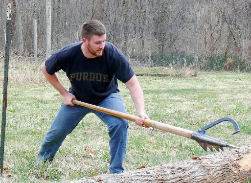

Events
Here are the events that the Colby Woodsmen Team competes in:
| Name | Demonstration | Event Rules |
|---|---|---|
| Axe Throw | Typically Throwing from 20 feet away at a five foot tall target, each competitor gets one practice throw and between 3 and 5 throws that count depending on how the competition is set up. Every competitor must use a two bit axe with at least a 2.5 lb head and a 24 inch handle. Throws must be made from behind a designated throwing line, or they will not count. Typically the bullseye is worth 5 points, with sucessive rings in the target being worth one less than its tighter neighbor. The competitor with the most points wins. Overview Here | |
| Bowsaw | This event can take many forms. As a team event - seen in the video to the left-, each member of the team will make a cut through the wood with the bowsaw, and if they cut out they must start a new cut. As a singles event it can take the form of a hard hit, where one tries to make a complete cookie with as few strokes of the bowsaw as possible. The singles event sometimes calls for the competitor to make 4 complete cookies for time. In this case it is usually called "Super Swede" Crazy Sawing Here! | |
| Birling | Birling is usually done in the water, or on a dryland log rotating on an axle. The competition can either be a double elimation, with both competitors trying to run the other off the log, or it can be done for longest time on the log or most rotations of the log. Singles Birling | |
| Crosscut | This event can be a doubles event and a team event. As a doubles event, which we call crosscut to death, two members of a team will make eight cuts on a log. If they cut out, they must restart the cut. As a team event, the team will split up into pairs, and each pair will make two cuts on the log, restarting if they happen to cut out. Time stops when all the cuts are made. Demostration Here | |
| Single Buck | In this event the competitor must make a cut through the log, usually a 18-24 inch diameter, using a bucking saw. If their cookie breaks they can continue the cut, but if they cut out they are disqualified. The winner is the sawyer with the fastest time. Overview Here | |
| Decking |  |
Decking uses a tool called a peavey, a stick with a poker at the end of it. A log begins at the top of a stanchion and is then rolled down a ramp by a pair of competitors. Once on the ground, the log must be rolled to touch two pegs. After the pegs are touched, the process is reversed and the log must go back up the ramp. No part of the competitor’s body can touch the log at any time. Once the log is returned to the beginning, the peaveys are handed to the next pair and it is repeated. |
| Pulp Toss | The goal of team pulp toss is to throw 4 pulp logs to a total of 48. This is done with 3 team members on either side of a pit that ranges from 15 to 20 feet long. Each member throws the 4 logs, and they only count towards the total of 48 if the log crosses the plane of the stakes. If it is thrown too far, or not far enough, the throw does not count | |
| Underhand Chop | The goal of this event is to chop a log in half. This is done by placing the log horizontally in a station and chopping in between the feet. In collegiate timbersports this is usually a triples event, The team with the fastest time wins. Overview Here | |
| Standing Block Chop | The goal of this event is to chop a log as fast as possible as if you were felling a tree. Similar to h-chop, the competitor is severing a log, but in this case the log is vertical. Often this event is run as a doubles events, and one member of each pair will complete a side of the log.Overview Here | |
| Pole Climb | In this event the competitor must climb to the top of the pole as quickly as possible. They are allowed to wear spikes and carry a rope if the choose. Today this event has the competitors on belay, but that did not used to be the case! Other variations have the competitors descending the pole for time aswell, but we do not run those competitions | |
| Disc Stack | the goal of this event is to stack as many cookies as possible using a chain saw. Competitors are given between 16 and 18 inches of 6×6″ wood to balance as many cookies as possible by cutting through the log horizontally with the chainsaw. Highest stack count wins, and top stacks range from 17 to 22 cookies. | |
| Chain Throw | The goal of this event is for the competitor to coil a surveyors chain as neatly as possible. The fastest time wins. | |
| Fire Build | Firebuild, usually run as a singles or team event, has the competitor start with a cedar log, a hatchet, a can with some soap and water, and three matches The competitor must make a fire using only those materials and use it to heat up the can of water until it boils over the edge of the can. Prior events had the compitors have to fry and egg on a pan, but that version transformed into "who can eat the least cooked egg" instead of "who can build a fire the fastest".The event is done for time, and the fastest time wins. | |
| Stock Saw | The goal of this event is to make two cuts through a log with a chainsaw as quickly as possible. The competitor with the fastest time wins. Cuts that do not make it through the entire width of the wood must be remade, or the competitor is disqualified. Overview Here | |
| Splitting | This event is run as a triples event in a few different ways. The first is "Split and stuff" where each competitor is given a section of a log to split, and they must split it such that each section can be pushed through a square hole in a board. The second way is "dot split", where each competitor is given a section of a log with a dot of paint in the middle, and must split it into four pieces such that each piece contains a piece of paint on it. Each team must only have one person splitting at a time, and the fastest total time wins. |